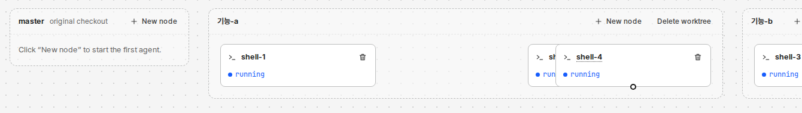
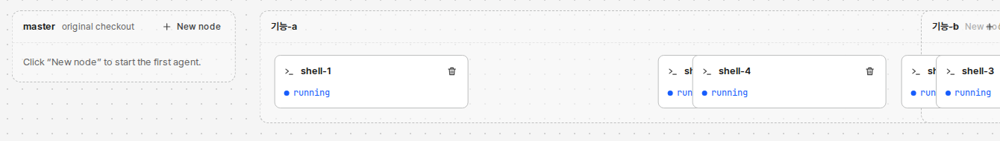

시험 데몬에서 찍었다(심플 보기, 화면 언어 English). 위: 기능-a의 shell-2를 오른쪽으로 끈 뒤 새 노드 shell-4를 띄웠다. shell-4가 shell-2를 덮는다. 아래: 기능-b 묶음을 기능-a 바로 옆으로 끈 뒤 기능-a에 노드를 하나 더 띄웠다. 커진 기능-a가 기능-b 밑으로 들어간다.


배치는 끈 것을 모른다. 끈 것은 배치를 모른다. 둘 사이에 겹침을 보는 곳이 없다.
| 장면 | 겹치는 까닭 | 코드 |
|---|---|---|
| 끈 카드 위에 새 카드 | 나무 배치는 끈 카드도 원래 칸에 있다고 보고 칸을 나눈다. 끈 카드는 다른 칸 위에 놓일 수 있다. 새 카드는 그 칸에 들어간다. | web/src/Graph.tsx:251, :255 |
| 끈 묶음 쪽으로 옆 묶음이 커짐 | 끈 묶음은 그 자리에 그대로 둔다. 끌지 않은 묶음은 카드가 늘면 커지고 뒤 묶음을 민다. 끈 묶음은 밀리지 않는다. | web/src/layout.ts:109, web/src/Graph.tsx:260 |
| 끈 것을 다른 것 위에 놓음 | 놓을 때 겹침을 보지 않는다. 위치만 기록한다. | web/src/Graph.tsx:377-378 |
| 심플 ↔ 표준 전환 | 끈 위치는 픽셀로 남는다. 카드 폭이 260에서 600으로 바뀌면 끈 카드끼리, 끈 카드와 배치 카드가 겹친다. | web/src/Graph.tsx:240-244, :255 |
| 새 묶음·노드 이동 | 새 워크트리나 입양으로 묶음 나무가 바뀌면, 끌지 않은 묶음이 끈 묶음 자리로 갈 수 있다. | web/src/layout.ts:107-109 |
같은 장면(위 아래 그림: 끈 기능-b 쪽으로 기능-a가 커짐)을 세 안으로 그렸다. 위는 놓은 직후, 아래는 기능-a에 카드가 늘어난 뒤다.
layout.ts에 순수 함수 하나(약 30줄), Graph.tsx에서 두 번 부른다. 새 상태·단추·저장은 없다. 지금 끄는 상자는 React Flow가 이미 주는 dragging으로 안다.onNodeDragStop)와 빈자리 찾기 함수.dragged), 카드 끌기 경계(CARD_EXTENT), [정렬]의 「끈 위치 버리기」가 없어진다. 대신 형제 순서를 이 브라우저에 저장하는 표가 생긴다.랩터-3 기준으로 A는 새 상태 없이 순수 함수 하나로 다섯 장면을 모두 막는다. B는 부품 수가 비슷하지만 한 장면만 막는다. C는 지우는 부품이 가장 많지만 저장 부품이 새로 생기고, 사람이 정한 자유 이동을 바꾼다. 그래서 A를 권한다. C는 자유 이동이 필요 없다고 정하면 다시 볼 만하다.
| A. 배치 뒤 풀기 | B. 놓을 때 밀기 | C. 순서만 바꾸기 | |
|---|---|---|---|
| 막는 장면 | 다섯 모두 | 하나 | 다섯 모두 |
| 새 부품 | 순수 함수 1 | 처리기 1, 함수 1 | 순서 저장 1 |
| 지우는 부품 | 없음 | 없음 | dragged, CARD_EXTENT, [정렬]의 되돌리기 |
| 제품 결정 변경 | 끈 것도 비켜 갈 수 있다(한 줄 더함) | 없음 | 자유 이동을 없앤다 |
| 시험 | layout.test.ts에 상자 겹침 표 시험 | 끌기 화면 시험 | 순서 저장 시험 |